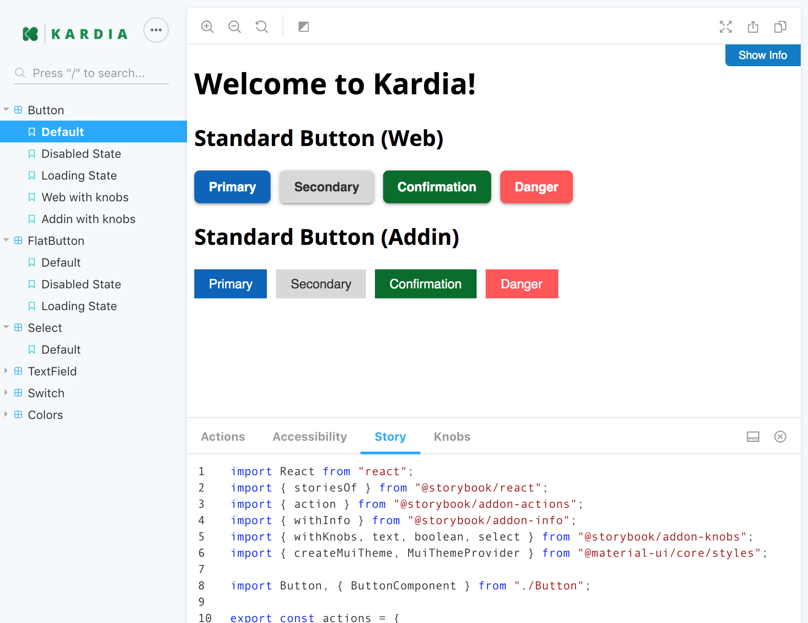

The goal of the design system is to ensure we have a consistent voice throughout our clients’ experience, as well as to ensure developers have the information they need to make design prototypes into a coded reality.
Small Beginnings
The system started as an internal hackathon project between myself and my esteemed friend and developer Umar. We both had the same dream: unify all of our disjointed styles across all our products into one, manageable, flexible system that could answer questions for designers and developers (at least the basic questions to start).
We conducted an experiment using the component that most people start with: the button. It is versatile yet also quite firm in its usage, and we had a good idea of what it would boil down into.
After creating the button, we realized we also had to lay out some basic styles (which would later become our design tokens), starting with colours. Surprisingly, this had never been formally done at Vena before. Once word got around that myself and the other designer had tested all the colours against black or white to ensure they met proper colour contrast standards (WCAG 2.1 level AA), the palette was requested for company use. We were delighted to share it with the marketing, training and professional services departments.
Design Collaboration
Wednesdays are my new favourite day: I conduct weekly check-ins with my fellow designers to ensure new components in our Figma-based design are documented properly with examples in different products, and especially that they answer any questions developers may have since we are building out the system as a tool to help them as well. It’s interesting to think of developers as our end users as well as our clients. I treasure the time spent with my design team to discuss how components should be designed. We love to get into the nitty-gritty in these meetings.
We enter all our thoughts and discussion points into one yellow box per week/meeting, and go through all the changes and decisions together. This is the result of weekly "yellow box" meetings since the pandemic began.

Storybook
Along with input from developers, PMs and sometimes real clients (end users of Vena) a designer and developer eventually work together to move a component from Figma into Storybook, where it will be translated into a reusable piece of code. This is a really great moment for a designer and developer to pair design and pair program. It’s also the moment when my favourite topic is discussed: accessibility.
Each new component is given an accessibility audit and usually a makeover as well to ensure it includes semantic labels for screen readers, tabability, focus states, alternative text, and anything else required to meet WCAG 2.1 level AA as mentioned previously.
Benefits
We are only in the very beginning stages of Kardia, but I am so excited to note the effects even now. Designers and developers are making use of the reusable components in their work rather than building from scratch every time, and ticket velocity is increasing. Documentation is saving lots of handoff time, allowing our designers and devs more time for the more challenging work, like thinking critically about how we create mocks and code systems.
What’s better though, is the improved communication and teamwork between designers and developers here at Vena. We are working remotely for the time being, but we are united through our membership of our internal Kardia Council.
We have a lot of fun in these meetings, using Figma as a place to brainstorm and speak our minds together. I facilitate in a way that allows everyone their chance to speak, share agenda topics, and help each other to make the best possible system that we can.